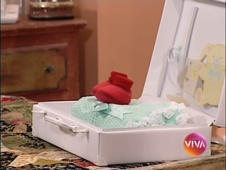

Por Amor
| CAPÍTULO | EXIBIÇÃO | REPRISE | ||
|---|---|---|---|---|
| 001 | Trilha de encerramento: Falando de Amor - MPB4 e Quarteto em Cy | 13/10/1997 | 19/05/2010 | |
| 002 | Trilha de encerramento: Falando de Amor - MPB4 e Quarteto em Cy | 14/10/1997 | 20/05/2010 | |
| 003 | Trilha de encerramento: Falando de Amor - MPB4 e Quarteto em Cy | 15/10/1997 | 21/05/2010 | |
| 004 | Trilha de encerramento: Falando de Amor - MPB4 e Quarteto em Cy | 16/10/1997 | 24/05/2010 | |
| 005 | Trilha de encerramento: Falando de Amor - MPB4 e Quarteto em Cy | 17/10/1997 | 25/05/2010 | |
| 006 | Trilha de encerramento: Falando de Amor - MPB4 e Quarteto em Cy | 18/10/1997 | 26/05/2010 | |
| 007 | Trilha de encerramento: Falando de Amor - MPB4 e Quarteto em Cy | 20/10/1997 | 27/05/2010 | |
| 008 | Trilha de encerramento: Falando de Amor - MPB4 e Quarteto em Cy | 21/10/1997 | 28/05/2010 | |
| 009 | Trilha de encerramento: Falando de Amor - MPB4 e Quarteto em Cy Obs.: Primeiro capítulo a ter a abertura originalmente curta trocada pela abertura na íntegra. |
22/10/1997 | 31/05/2010 | |
| 010 | Trilha de encerramento: Só Você - Fábio Jr. | 23/10/1997 | 01/06/2010 | |
| 011 | Trilha de encerramento: Só Você - Fábio Jr. | 24/10/1997 | 02/06/2010 | |
| 012 | Trilha de encerramento: Só Você - Fábio Jr. | 25/10/1997 | 03/06/2010 | |
| 013 | Trilha de encerramento: Só Você - Fábio Jr. | 27/10/1997 | 04/06/2010 | |
| 014 | Trilha de encerramento: Só Você - Fábio Jr. | 28/10/1997 | 07/06/2010 | |
| 015 | Trilha de encerramento: Só Você - Fábio Jr. | 29/10/1997 | 08/06/2010 | |
| 016 | Trilha de encerramento: Só Você - Fábio Jr. | 30/10/1997 | 09/06/2010 | |
| 017 | Trilha de encerramento: Só Você - Fábio Jr. | 31/10/1997 | 10/06/2010 | |
| 018 | Trilha de encerramento: Per Amore - Zizi Possi | 01/11/1997 | 11/06/2010 | |
| 019 | Trilha de encerramento: Per Amore - Zizi Possi | 03/11/1997 | 14/06/2010 | |
| 020 | Eduarda está grávida. Trilha de encerramento: Per Amore - Zizi Possi |
04/11/1997 | 15/06/2010 | |
| 021 |  | Trilha de encerramento: Per Amore - Zizi Possi | 05/11/1997 | 16/06/2010 |
| 022 | Trilha de encerramento: Per Amore - Zizi Possi | 06/11/1997 | 17/06/2010 | |
| 023 | Trilha de encerramento: Per Amore - Zizi Possi | 07/11/1997 | 18/06/2010 | |
| 024 | Trilha de encerramento: Per Amore - Zizi Possi | 08/11/1997 | 21/06/2010 | |
| 025 | Trilha de encerramento: Per Amore - Zizi Possi | 10/11/1997 | 22/06/2010 | |
| 026 | Branca levanta uma faca para Milena. Trilha de encerramento: Per Amore - Zizi Possi |
11/11/1997 | 23/06/2010 | |
| 027 | Trilha de encerramento: Per Amore - Zizi Possi | 12/11/1997 | 24/06/2010 | |
| 028 | Trilha de encerramento: Per Amore - Zizi Possi | 13/11/1997 | 25/06/2010 | |
| 029 | Trilha de encerramento: Per Amore - Zizi Possi | 14/11/1997 | 28/06/2010 | |
| 030 | Trilha de encerramento: Per Amore - Zizi Possi Obs.: No lugar do último bloco correto, o Viva repetiu o bloco equivalente pertencente ao capítulo de nº 28. |
15/11/1997 | 29/06/2010 | |